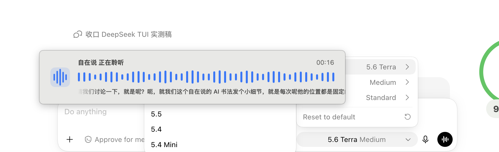
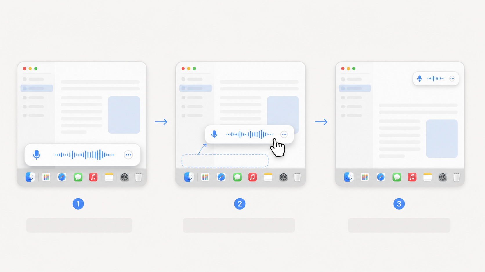
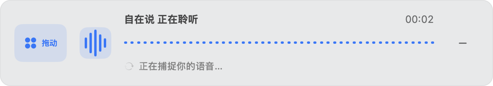
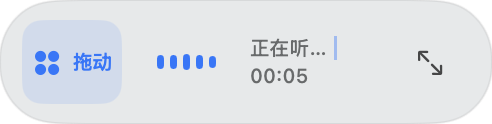
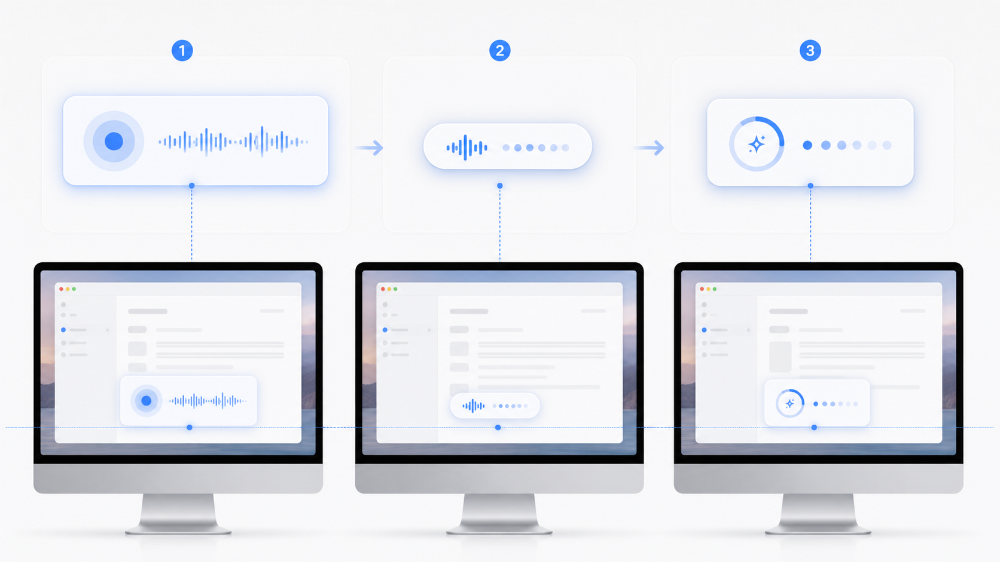

给 AI 语音输入法做了几处小优化，实际体验顺了不少——悬浮窗、拖动和位置记忆
这样以后更新时，更容易第一时间在订阅号消息里看到。
▌▌▌
阿康的第101篇原创文章
阿康导读：这次升级没有增加什么大而全的功能，主要解决一个每天都能碰到的小麻烦：实时语音输入条挡住了正在使用的应用。我们从自动避让想到直接拖动，又把收起、位置记忆和状态切换顺了一遍，看看这些小改动为什么会让高频使用舒服很多。
这次macOS v1.8.0的升级，起因不是我突然想给界面换个样式。是因为用得多了，我碰到一个很具体、也很影响操作的问题。
语音输入进行实时识别时，悬浮窗会遮挡当前应用底部的内容。最明显的一次，是我在 ChatGPT 里切换模型，模型选择菜单刚好从底部弹出来，却被语音输入条挡住了。

这是我在 ChatGPT 里切模型时截下来的画面。模型菜单刚好在底部弹出，自在说的语音输入条也固定在底部，于是两个东西正面撞上。
我当时有点恼火。一个语音输入工具本来是来帮我输入的，结果先把输入前的操作挡住了。我的第一个想法很直接：悬浮窗得能拖，至少让我马上把它移到不挡内容的位置。
在这个想法上，这次升级又补了收起、贴边和位置记忆几个小功能。它们单独看都不大，但组合起来，日常使用会顺很多。
先从悬浮条的使用方式开始优化
这个问题出现以后，我花了不少时间想自动化方案。检测其他应用的菜单，根据菜单位置避让，或者让悬浮条自己找空白区域，我都想过。
方案听起来挺聪明，可跨应用浮层并不知道另一个软件刚刚弹出了什么，也不能稳定判断那个位置是不是用户正在操作的地方。继续往上加规则，代码会越来越复杂，结果还不一定可靠。
想来想去，还是直接支持拖动最靠谱。
挡住了就拖开，暂时不需要完整信息就收起来。想继续说话时，还能从波形和短文字里确认它在工作。这个决定不复杂，但用起来更符合直觉。

拖动这件事，还需要更容易发现和操作
最初的方案里，展开条左边有一个小点阵，当作拖动把手；收起后还有一个“贴边”按钮。
看起来功能都在。
实际一用，问题全出来了。拖动热区太小，要精确点中；窗口拖起来会闪，跟手也慢。贴边按钮也有点多余：既然已经在拖了，为什么还要再点一次？
我把“功能做出来”误当成了“用户自然会用”。
后来我把拖动改成了 macOS 原生窗口拖拽。鼠标移到把手上，点阵会有蓝色背景和“拖动”提示；把手热区也扩大了。收起按钮用同一套反馈：平时只显示减号，鼠标移入才出现蓝色背景和“收起”。

变化不大，但用户不用再猜哪个图标能拖，也不用费劲点中一个小区域。鼠标移过去，界面会先告诉你“这里可以动”。
文字不用一直占着空间，需要理解动作的时候再出现就够了。
贴边也不再是单独按钮。只有用户明确向屏幕外侧拖动一段距离后松手，窗口才会变成贴边球；普通拖动只是移动位置。这样能避免停在屏幕边缘时被误判为“要收起”。
收起以后，至少要看得出它还在工作
收起以后，如果只剩一个球和几根波形，确实很干净，但用户看不出刚才说的话有没有被识别。完整文字全放进去，又会重新挡住屏幕。
所以现在的收起状态主要展示三样东西：动态波形、录音时间，以及最近一小段文字。文字只显示最新内容，不把整段转写塞进小窗口；屏幕共享时，也可以在设置里关掉这段实时文字。

视觉上，我也把它从一条单薄的线调整成了更清楚的卡片。波形、状态文字、时间和操作入口各有位置，扫一眼就知道它在听什么、现在是什么状态；如果关闭了文本预览，仍然可以只通过波形和状态判断它是否还在工作。
波形动起来不是为了炫技，只是让人确认它还在听，同时又不要重新占满屏幕。
位置记忆是这次补上的一个细节
拖动做顺了，我以为位置记忆就是顺手的小功能。
结果第一版只记住了“靠左还是靠右”。你上次把悬浮条拖到某个位置，下次它可能跑到右侧中间。它记住的是一个停靠规则，却没有记住用户真正放下的位置。
更麻烦的是，录音时是长条，停止后会切到“正在处理”，收起又是胶囊。它们尺寸不同，如果每个状态都重新算位置，就会看起来像三个窗口在屏幕上跳来跳去。
第一次使用时，它默认在底部居中。主动拖放以后，程序记录窗口中心相对屏幕的位置；展开、收起和处理提示都围绕这个中心改变尺寸。窗口隐藏前还会再保存一次，下次快捷键唤起时，位置和形态都能接着上次来。
这是小细节，但每天都用的工具，最怕的就是上次放好了，下次又自己跑回去。

这次先更新 macOS
这次已经发布 macOS v1.8.0，可在github下载，也可后台私信获取链接。
Windows 暂时保持在 1.7.0。最近家里的Windows电脑也拆开维修了，暂时没有条件做完整的真实验证，所以这次只更新Mac。等Windows电脑恢复后，再补那边的测试和发布。
实际上，这个软件的语音识别能力是最基础核心的，但是当功能已经足够强，真正影响产品体验的，往往是这些使用过程里的细节：它会不会挡住内容，拖起来顺不顺，收起后还能不能看懂，下一次会不会记得你放在哪里。
这次改的都是小地方，但每天用起来，确实省心不少。
以上，有启发的话，欢迎点个赞、在看，也可以转发给有需要的朋友。
看完记得关注@阿康AI探索号
及时收到更多AI实战内容
↓ ↓ ↓